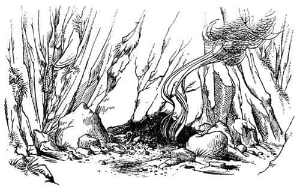
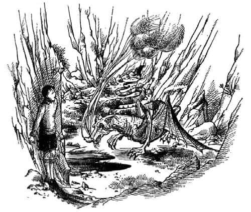
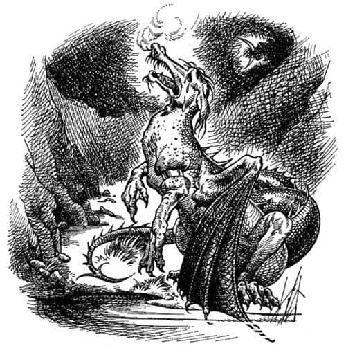

Eustace’in Macerası
Bu sırada diğerleri nehirde ellerini ve yüzlerini yıkıyor, akşam yemeği için hazırlık yapıyorlardı. En iyi üç okçu koyun kuzeyindeki tepelere çıkmış, şu an ateşin üzerinde kızarmakta olan bir çift yaban keçisiyle dönmüşlerdi. Caspian, herkesin bol miktarda içebilmesi için kıyıya bir fıçı şarap çıkarılmasını emretmişti; bu, Archenland’ın içmeden önce suyla karıştırılması gereken sert şaraplarındandı. İşler o ana kadar iyi gitmişti ve yemek neşe içinde geçiyordu. Ancak keçiden ikinci porsiyonunu aldıktan sonra Edmund, “Bizim canavar Eustace nerede?” dedi.
Bu arada Eustace bilinmeyen vadide etrafına bakmaktaydı. Vadi o kadar dar ve derin, etrafı çevreleyen kayalıklar o kadar sarptı ki, sanki büyük bir çukur ya da siper gibi görünüyordu. Taşlık bir vadi olmasına rağmen etrafta otlar ve kurak bir yaz mevsiminde demiryollarının kenarlarında görülenlere benzer anız izleri vardı. Yaklaşık on beş metre ötesinde bir gölet vardı. Vadide, görünüşe göre başka hiçbir şey yoktu; ne bir hayvan, ne bir kuş, ne de bir böcek. Güneş parlıyordu, korkunç tepeler ve boynuza benzer dağlar vadinin kenarından aşağıya uzanıyordu.
Eustace, siste yolunu şaşırıp tepenin yanlış tarafından indiğini anladı, dönüş yolunu planlamak üzere arkasına döndü. Ancak arkasına bakar bakmaz ürperdi. Öyle görünüyordu ki, büyük şans eseri aşağıya inen tek yolu bulmuştu: Uzun, yeşil, ince bir toprak uzantısıydı bu, her iki yanında uçurumlar vardı; çok dik ve dardı. Bundan başka bir yoldan geri dönmenin imkânı yoktu. Peki yolun nasıl bir şey olduğunu gördükten sonra, oradan inmeye cesaret edebilecek miydi? Bunu düşününce başı dönmeye başladı.
Ne olursa olsun göletten kana kana su içmesinin iyi olacağını düşünerek tekrar arkasını döndü. Ama tam vadiye doğru bir adım atacaktı ki, arkasında bir ses duydu. Cılız bir sesti, ama o korkunç sessizlikte oldukça yüksek gibi geldi. Önce olduğu yerde donakaldı, sonra kendini toparladı ve başını çevirip baktı.
Kayalıkların dibinde, birazcık soluna doğru alçak ve karanlık bir kovuk vardı, belki de bir mağara ağzıydı. Buradan, belli belirsiz iki ince duman çıkmaktaydı. Karanlığın hemen ardındaki seyrek taşlar, sanki bir şey karanlıkta sürünüyormuş gibi hareket ediyordu (duyduğu ses buydu).
Bir şey sürünüyordu. Daha da kötüsü, bir şey dışarıya çıkıyordu. Edmund, Lucy ya da siz bunu hemen tanırdınız, ama Eustace gerekli kitapların hiçbirini okumamıştı. Mağaradan dışarıya çıkan şey, hiç de hayal etmediği bir şeydi; uzun, kurşuni bir burun, donuk kırmızı gözler, tüyü ya da kürkü olmayan, yerde uzanıp giden kıvrak bir vücut, örümceklerinki gibi, dirsekleri sırtından daha yüksek olan bacaklar, acımasız pençeler, taşlarda kulak tırmalayıcı sesler çıkaran yarasa kanatlarına benzeyen kanatlar ve devasa bir kuyruk. Dumanlar burun deliklerinden çıkıyordu. Ejderha diye bir kelime çıkmadı ağzından, zaten çıksaydı da fark eden bir şey olmayacaktı.

Ejderhalar hakkında bir şeyler bilseydi bu ejderhanın davranışına biraz şaşırırdı. Ne oturup kanat çırptı ne de ağzından alev çıkardı. Burun deliklerinden çıkan dumanlar, sönmek üzere olan bir ateşin dumanlarına benziyordu. Eustace’i fark etmemişti. Yavaşça gölete doğru ilerledi – yavaşça ve birçok kez durarak. Tüm korkusuna rağmen Eustace bile bunun yaşlı ve zavallı bir yaratık olduğunu hissetmişti. Koşsa mı koşmasa mı, bilemiyordu. Bir ses çıkarırsa ejderha onu görebilir, daha hızlı hareket edebilirdi. Belki de sadece numara yapıyordu. Zaten uçan bir yaratıktan tırmanarak kaçmanın ne yararı olurdu ki?

Ejderha gölete ulaştı, su içebilmek için iğrenç ve pullarla kaplı çenesini taşların üzerine yasladı. Ama içmeden önce korkunç bir ses çıkardı, bir ölüm çığlığı attı, birkaç çırpınış ve titreyişten sonra yuvarlanıp, bir pençesi havada, hiç kıpırdamadan öylece kaldı. Sonuna kadar açık ağzından koyu renkte kan fışkırdı. Burnundan çıkan dumanlar bir an için kapkara oldu, ama sonra dağıldı gitti. Başka da duman çıkmadı.
Eustace uzunca bir süre hareket etmeye cesaret edemedi. Belki de canavar numara yapıyordu, belki de maceracıları ağına çekmesinin bir yoluydu bu. Ne var ki, kimsenin sabrı sonsuz değildir. Bir adım yaklaştı, sonra iki adım ve sonra durdu. Ejderha hareketsiz yatıyordu, Eustace gözlerindeki kırmızı ateşin de kaybolduğunu fark etmişti. Sonunda yanına gitti. Artık öldüğünden kuşkusu kalmamıştı. Korkuyla ejderhaya dokundu, hiçbir hareket yoktu.
Öylesine huzurluydu ki, neredeyse yüksek sesle gülecekti. Sanki sadece ölümünü seyretmemiş de ejderhayla boğuşup onu alt etmişti. Üzerinden atlayıp su içmek üzere gölete yaklaştı, çünkü sıcaklık dayanılmaz hale gelmişti. Gökgürültüsünü duyduğunda hiç şaşırmadı. Bundan hemen sonra güneş kayboldu ve o daha susuzluğunu gidermeden iri yağmur damlaları düşmeye başladı.
Bu adanın iklimi hiç hoş değildi. Bir dakikadan kısa bir süre içinde Eustace sırılsıklam ıslanmıştı; Avrupa’da bile böyle yağmur yağdığını gören yoktu, o kadar çok yağıyordu ki Eustace önünü zorlukla görebiliyordu. Bu yağmurda vadiyi tırmanmaya çalışmanın bir yararı yoktu. Görünürdeki tek sığınağa doğru koştu; ejderhanın mağarası. Orada uzanıp soluklanmaya çalıştı.
Birçoğumuz bir ejderhanın ininde ne bulacağımızı biliriz, ama daha önce söylediğim gibi Eustace gerekli kitapları okumamıştı. Onun okuduğu türden kitaplar ithalat, ihracat, hükümetler ve kanallar hakkında bir sürü bilgi verir vermesine, ancak ejderhalar konusunda zayıftır. İşte bu yüzden yattığı yer onu çok şaşırtmıştı. Bir kısmı taş olamayacak kadar dikenli ve diken olamayacak kadar sertti ve kıpırdayınca şıkırdayan bir sürü yassı ve yuvarlak şey vardı. Mağaranın girişinde bunu incelemesine yetecek kadar ışık vardı. Eustace en sonunda orada ne olduğunu anladı, zaten ondan başka kim olsa, bunun ne olduğunu hemen anlardı. Mağaranın içinde bir hazine vardı. Taçlar (dikenli şeyler bunlardı), paralar, yüzükler, bilezikler, külçe altınlar, kupalar, tabaklar ve mücevherler.
Eustace (birçok çocuğun aksine) hazineleri pek düşünmemişti, ama evde Lucy’nin yatak odasındaki resimden aptalcasına geçerek tesadüfen geldiği bu yeni dünyadaki çıkarlarını hemen fark etti. “Burada vergi yok” dedi “ve hazineyi devlete vermek zorunda değilsin. Bu hazinenin bir kısmıyla burada oldukça iyi zaman geçirebilirim. Belki Calormen’e giderim, bu ülkelerin gerçeğe en yakın olanı orası gibi görünüyor. Acaba ne kadarını taşıyabilirim? Şu bileziğe bak – üzerindeki şeyler muhtemelen elmas – bunu kendi bileğime takarım. Çok büyük, ama dirseğimin üzerine takarsam büyük gelmez. Sonra ceplerimi elmasla doldururum, bu altın taşımaktan daha kolay. Acaba bu iğrenç yağmur ne zaman duracak?” Beklemek için, para yığınının içinde daha rahat bir yere yerleşti. Ancak korku, özellikle dağda uzun bir yürüyüşten sonra, insanı çok yorar. Bu yüzden Eustace uyuyakaldı.
O derin uykusunda horlarken, diğerleri yemeklerini bitirmiş ve Eustace için kaygılanmaya başlamışlardı. Sesleri kısılana kadar “Eustace! Eustace! Heeey!” diye bağırıyorlardı; Caspian da borusunu çalıyordu.
“Yakınlarda değil, yoksa duyardı” dedi Lucy sapsarı bir yüzle.
“Kahrolası çocuk” dedi Edmund. “Neden böyle sinsice uzaklaşmak ister ki insan?”
“Bir şeyler yapmalıyız” dedi Lucy. “Kaybolmuş olabilir ya da bir çukura düşmüştür, hatta yerliler tarafından kaçırılmış bile olabilir.”
“Ya da vahşi hayvanlar tarafından öldürülmüştür” dedi Drinian.
“Eğer bu doğruysa, ne mutlu ki kurtulduk” diye homurdandı Rhince.
“Rhince Efendi” dedi Bastıbacak, “sen şimdiye kadar kendini küçülten bir söz söylememiştin. O yaratık benim dostum değil, ama Kraliçe’nin kanından geliyor; bizimle beraber olduğu sürece onu bulmak ve intikamını almak şeref meselesidir.”
“Elbette onu bulmak zorundayız, tabii eğer bulabilirsek” dedi Caspian bezgince. “Sorun da burada. Bu, bir arama ekibi ve beraberinde bir sürü tehlike anlamına geliyor. Kahrolası Eustace.”
Bu arada Eustace uyudu, uyudu, uyudu. Onu ancak kolundaki ağrı uyandırabildi. Ay, mağaranın girişinde ışıldıyordu ve hazineden oluşan yatağı ona çok daha rahatmış gibi geliyordu, artık yattığı yerin rahatsızlığını hissetmiyordu. Kolundaki ağrının nereden geldiğini önce anlamadı, ama az sonra dirseğinin üzerine taktığı bileziğin garip bir şekilde kolunu sıktığını fark etti. Uyurken kolu şişmiş olmalıydı (sol koluydu).
Sol koluna dokunmak üzere sağ kolunu kaldırdı, ama iki santim hareket etmeden durdu ve dehşetle dudaklarını ısırdı. Çünkü hemen önünde birazcık sağa doğru, ayışığının mağaranın zeminini aydınlattığı yerde korkunç bir şeklin hareket ettiğini gördü. Bu şeklin ne olduğunu biliyordu: Bir ejderhanın pençesiydi bu. Elini hareket ettirdiğinde hareket ediyor, durduğunda duruyordu.
“Tanrım ne aptalım” diye düşündü Eustace. “Kuşkusuz, canavarın bir de eşi var ve yanımda yatıyor.”
Dakikalarca kılını bile kıpırdatmaya cesaret edemedi. Burnunun dibinde, ayışığında aynen ölmeden önce diğer ejderhanın burnundan çıkan duman gibi kapkara görünen iki duman sütununun yükseldiğini görüyordu. Bu o kadar korkunçtu ki nefesini tuttu. Duman sütunları yok oldu. Artık nefesini tutamaz hale gelince çaktırmadan nefesini bıraktı; anında iki duman sütunu tekrar ortaya çıktı. Tüm bunlar olup biterken işin aslının ne olduğu konusunda en ufak bir fikri yoktu.
Az sonra dikkatle sola kayıp mağaradan dışarıya sürünmeye karar verdi. Belki de yaratık uyuyordu ve eğer bu doğruysa bundan iyi fırsat olamazdı. Fakat hareket etmeden önce soluna baktı. Aman tanrım! O tarafta da bir ejderha pençesi vardı.
Kimse Eustace’i o anda ağladığı için suçlayamaz. Hazinenin üzerine düşen gözyaşlarının büyüklüğüne kendi bile şaşırmıştı. Gözyaşları, aynı zamanda garip bir şekilde sıcaktı; üzerinden buhar yükseliyordu.
Ağlamanın yararı yoktu. İki ejderhanın arasından sürünerek çıkmalıydı. Sağ kolunu uzatmaya başladı. Ejderhanın ön ayağı ve pençesi de aynı hareketleri yaptı. Sonra, solunu denemeyi düşündü ve yine aynı şey oldu.
Her iki tarafındaki iki ejderha, o ne yaparsa tekrar ediyordu! Sinirleri bozuldu ve oradan kaçmaya karar verdi.
Mağaradan hızla dışarıya çıkarken, altınların şıngırtısı ve taşların gıcırdaması öylesine büyük bir gürültü yaptı ki, ejderhaların onu takip ettiğini sandı. Arkasına bakmaya cesaret edemedi. Hızla gölete koştu. Ayışığında yatan ölü ejderhanın tuhaf şekli başka birini korkutmaya yeterdi, fakat Eustace bunu fark etmemişti bile. Onun planı suya dalmaktı.
Göletin kenarına ulaşır ulaşmaz iki şey oldu. Birincisi, şaşkınlıkla dört ayağı üzerinde koşmakta olduğunu fark etti; neden böyle yapıyordu ki? İkincisi, suya doğru eğildiğinde bir saniyeliğine başka bir ejderhanın sudan kendisine bakmakta olduğunu sanmıştı. Hemen gerçeği anladı. Sudaki kendi yüzüydü. Bundan kuşkusu yoktu. O hareket ettikçe sudaki görüntü de hareket ediyor, ağzını açıp kapadıkça o da ağzını açıp kapıyordu.
Uyurken bir ejderhaya dönüşmüştü. İçinde açgözlü ve ejderhaca düşüncelerle, bir ejderhanın hazinesinin üzerinde uyuyarak kendisi de bir ejderha olmuştu.

Bu her şeyi açıklıyordu. Mağarada yanında iki tane ejderha yoktu. Sağında ve solundaki pençeler kendisinin sağ ve sol pençeleriydi. Duman onun burnundan çıkıyordu. Sol kolundaki (ya da eskiden sol kolu olan şeydeki) ağrıya gelince, sol gözünü kısarak ne olduğunu görebiliyordu artık. Bir çocuğun koluna güzelce geçmiş olan bilezik bir ejderhanın kalın ve kısa kolu için çok küçüktü. Pullarla kaplı etine iyice gömülmüştü, her iki tarafı da şişmişti ve sızlıyordu. Ejderha dişleriyle orayı deşti ama yine de bileziği çıkaramadı.
Ağrıya rağmen ilk hissettiği şey bir rahatlamaydı. Artık hiçbir şeyden korkmayacaktı. Artık dehşet saçan oydu ve şövalyeler hariç (ki onların da bazıları) dünyadaki hiçbir şey ona saldırmaya cesaret edemezdi. Artık Caspian ve Edmund’dan öcünü alabilirdi.
Bunu düşünmesiyle vazgeçmesi bir oldu. Onlarla dost olmak istiyordu. Tekrar insanların arasına dönmek, konuşup gülmek ve bu sefer her şeyi paylaşmak istiyordu. Tüm insan ırkından soyutlanmış bir canavar olduğunu anlıyordu şimdi. Üzerine korkunç bir yalnızlık çöktü. Diğerlerinin hiç de kötü olmadığını anlamaya başlamıştı. Her zaman düşündüğü gibi iyi bir insan olup olmadığını merak etmeye başladı. Onların seslerini özlemişti. Bastıbacak’tan bile olsa, nazik bir söz duymak onu mutlu edecekti.
Eskiden Eustace olan zavallı ejderha bunu düşündüğü zaman yüksek sesle ağlamaya başladı. Ayışığında ıssız bir vadide hüngür hüngür ağlayan güçlü bir ejderha, görülmesi ve duyulması gereken bir şeydir.
Sonunda sahile geri gitmeyi denemeye karar verdi. Caspian’ın asla denize açılıp onu geride bırakmayacağını anlamıştı. Şu ya da bu şekilde insanlara, kendisinin kim olduğunu anlatabileceğine emindi.
Uzun uzun su içti ve sonra (biliyorum bu şok edici, ama biraz düşünürseniz değildir) ölü ejderhanın neredeyse hepsini yedi. Ne yaptığını anlamadan önce yarısını yemişti bile; çünkü görüyorsunuz ki aklı Eustace’in aklı olsa bile, iştahı ve sindirim sistemi bir ejderhanınkiydi. Bir ejderhanın en çok sevdiği yemek, taze ejderha etidir. Aynı ülkede birden fazla ejderhanın nadiren bulunmasının nedeni budur.
Sonra vadiden tırmanarak çıkmak için geri döndü. Tırmanışa bir sıçramayla başladı ve sıçrar sıçramaz da uçabildiğini anladı. Kanatlarını tamamıyla unutmuştu ve bu kendisi için büyük bir sürpriz olmuştu; uzun süreden beri başına gelen ilk hoş sürpriz buydu. Gökte iyice yükseldi ve ayışığında, altında uzanan sayısız tepe gördü. Gümüş bir levha gibi görünen sahili, demirlemiş Şafak Yıldızı’nı ve sahilin yanındaki ormanda yanan kamp ateşinin pırıltılarını görebiliyordu. Çok yükseklerden, kendisini tek bir hareketle aşağıya doğru bıraktı.
Lucy çok derin uykuya dalmıştı, çünkü Eustace’ten iyi haber alma umuduyla, arama grubu dönene kadar, uyumadan onları beklemiş, sonunda uykusuzluktan kendini kaybetmişti. Caspian’ın liderliğinde yola çıkanlar, çok bitkin bir biçimde ve epey geç saatte dönmüşlerdi. Haberler huzur kaçırıcıydı. Eustace’ten herhangi bir iz bulamamışlardı, ancak bir vadide ölü bir ejderha görmüşlerdi. Ellerinden geleni yapmışlar, birbirlerine başka ejderha olmadığı konusunda ikna edici sözler söylemişlerdi. Öğleden sonra saat üç civarında ölen ejderhanın (bu onu gördükleri saatti) birkaç saat önce bir insanı öldürmüş olabileceğine inanmıyorlardı.
“Eğer o veledi yiyip de onun yüzünden ölmediyse” dedi Rhince, “ben de ne olayım!” Ancak bunu sessizce söylemişti ve onu kimse duymamıştı.
Lucy gecenin bir vakti uyandı ve herkesin birbirlerine sokularak oturmuş, fısıldayarak konuşmakta olduğunu gördü.
“Ne oluyor?” dedi Lucy.
“Hepimiz çelik gibi olmalıyız” diyordu Caspian. “Az önce ağaçların üzerinden bir ejderha uçtu ve sahile kondu. Evet, eminim bizimle geminin arasında bir yerde duruyor şu anda. Yazık ki oklar ejderhalara karşı işe yaramaz. Ateşten de korkmazlar.”
“Majestelerinin izniyle—” diye başladı Bastıbacak.
“Hayır, Bastıbacak” dedi Kral, “kesinlikle. Onunla teke tek dövüşmeye kalkışmanı yasaklıyorum. Bu konuda bana itaat etmeye söz vermezsen seni bağlattıracağım. Onu yakın takibe alalım ve hava aydınlanır aydınlanmaz sahile inip onunla savaşalım. Ben önden gideceğim. Kral Edmund sağımda ve Lord Drinian solumda olacak. Başka plan yapmaya gerek yok. Birkaç saat içinde hava aydınlanacak. Bir saat sonra yemek servisi yapılsın ve şarabın geri kalanı dağıtılsın. Unutmayın, her şey sessizlik içinde yapılmalı.”
“Belki uzaklaşır” dedi Lucy.
“Giderse daha kötü olur” dedi Edmund, “çünkü o zaman nerede olduğunu bilemeyiz. Odada bir arı varsa, nerede olduğunu bilmek isterim.”
Gecenin geri kalan bölümü berbattı, yemek vaktinde bir şeyler yemek zorunda olduklarını bilmelerine rağmen, çoğunun hiç iştahı yoktu. Karanlığın kaybolup, kuşların orada burada ötüşmeye başlamasından önce, sonsuzluk kadar uzun saatler geçti. Hava tüm gece olduğundan daha nemli ve daha soğuktu. Caspian, “Vakit geldi, dostlarım” dedi.
Kılıçlarını çekerek ayağa kalktılar ve Lucy ortada, Bastıbacak da onun omzunda sıkı bir saf oluşturdular. Bu beklemekten daha iyiydi. Artık herkes birbirini, sıradan zamanlarda olduğundan daha fazla seviyordu. Az sonra yürümeye başladılar. Ormanın kenarına yaklaştıklarında hava daha da aydınlanmıştı. Orada, kumların üzerinde dev bir kertenkele ya da plastik bir timsah veya ayakları olan bir yılan gibi görünen kocaman ve iğrenç bir ejderha yatmaktaydı.
Onları gördüğünde ayağa kalkıp duman ve ateş püskürteceği yerde – neredeyse paytak bir yürüyüşle – sığlıklara doğru geriye çekildi.
“Başını niye öyle sağa sola sallıyor?” dedi Edmund.
“Şimdi de aşağı yukarı sallıyor” dedi Caspian.
“Ve gözlerinden bir şeyler çıkıyor” dedi Drinian.
“Ah, göremiyor musunuz” dedi Lucy, “ağlıyor; gözyaşları onlar.”
“Buna güvenmemelisiniz Madam” dedi Drinian. “Savunmanızı zayıflatmak için timsahlar da yapar bunu.”
“Bunu söylediğinde başını salladı” dedi Edmund. “Sanki hayır dermiş gibi. Bakın, yine yapıyor.”
“Bizim ne söylediğimizi anladığını mı sanıyorsunuz?” diye sordu Lucy.
Ejderha başını hızla sallamaya başladı.
Bastıbacak Lucy’nin omzundan sıyrıldı ve öne çıktı.
“Ejderha” diye duyuldu tiz sesi, “konuşmaları anlayabiliyor musun?”
Ejderha evet anlamında başını salladı.
“Konuşabiliyor musun?”
Hayır dedi başıyla.
“O zaman” dedi Bastıbacak, “sana burada ne işin olduğunu sormak gevezelik olur. Dostsan sol ön ayağını başının üzerine kaldır.”
Ejderha denileni yaptı, ama bunu hantalca yapmıştı, çünkü o ayağı altın bilezikten dolayı şişmiş ve acıyordu.
“Ah, bakın” dedi Lucy, “ayağında bir şey var. Zavallı şey – ağlamasının nedeni belki de budur. Belki de tıpkı Androkles ve Aslan’da olduğu gibi, o da iyileştirilmek için bize gelmiştir.”
“Dikkatli ol Lucy” dedi Caspian. “Çok akıllı bir ejderha, ama yalan söylüyor olabilir.”
Lucy ileriye atılmıştı bile. Bastıbacak kısa bacaklarıyla yetişebildiği kadar onu takip ediyordu, hemen arkalarından da çocuklar ile Drinian geliyordu.
“Acıyan ayağını göster bana” dedi Lucy. “Belki iyileştirebilirim.”
Bir zamanlar Eustace olan ejderha, Lucy’nin likörünün deniz tutmasını nasıl iyileştirdiğini hatırlayarak ayağını memnuniyetle uzattı. Ancak hayal kırıklığına uğradı. Büyülü sıvı şişkinliği indirip ağrıyı biraz hafifletmişti ama altını eritmemişti.
Herkes tedaviyi seyretmek için toplanmıştı, Caspian aniden bağırdı, “Bakın!”
Gözlerini bileziğe dikmişti.